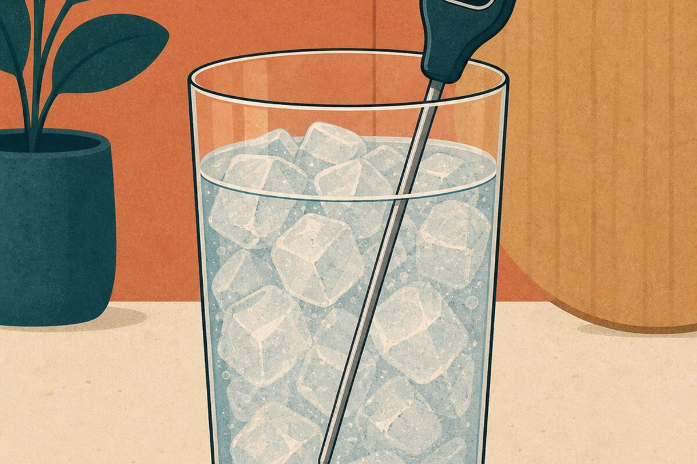

As an Amazon Associate I earn from qualifying purchases. This site contains sponsored product links. Prices and availability are shown on Amazon — check Amazon for current details. Full disclosure
Guide · Thermometers · Season: Holiday cooking
What does ±0.5°F actually mean? Check your thermometer at home in three minutes
A listing can claim half a degree. Federal guidance says most food thermometers read accurate within 2 to 4 degrees. Here is the 30-second ice test that tells you which one you own.
By the ShopNow Kitchen Desk · Published 2026-11-20 · Updated 2026-11-20 · 4 min read · This category · Sources

Commissioned editorial illustration of the ice-water test described below. Not a product photograph, and not a photograph of any specific thermometer.
One of the two thermometers in this shop carries an accuracy figure right in its name: the ThermoMaven listing title states “±0.5℉ Accuracy”. Nobody here has measured that — this site has no bench, no ice bath of its own and no calibration certificate, so the claim is quoted, not repeated as fact. What you can do in three minutes at your own sink is test whether the reading you get is the reading you think you get.
What the food-safety guidance actually says
The USDA's Food Safety and Inspection Service publishes two numbers worth knowing before you trust any thermometer. First, expectation: “Most food thermometers will give an accurate reading within 2 to 4 degrees F.” Second, the check: it publishes two calibration methods, one with ice water and one with boiling water. Both of those come from the same page, which also lists which thermometer types can be adjusted and which cannot — read that part before you try to “fix” a reading. Source: FSIS — Food Thermometers, Using a Food Thermometer and Calibration.
Why a ±0.5°F claim and a “2 to 4 degrees F” expectation are not the same sentence. A tolerance printed on a listing is the seller's specification for the product line. The federal figure is what a consumer thermometer in general can be expected to deliver in a kitchen. Neither number tells you about the unit in your drawer — which is exactly the gap the ice test closes in one glass.
The ice-water test, step for step
These are the steps as FSIS publishes them, in their own order, with the two details people skip: the stem depth and not touching the glass.
Fill a large glass with ice cubes.
Add drinking water, then stir well.
Immerse the thermometer stem a minimum of 2 inches into the mixture — without touching the sides or the bottom of the glass.
Wait a minimum of 30 seconds, and read it without pulling the stem out.
It should read 32°F. If it does, the thermometer is calibrated. If it does not, adjust only if the manufacturer says it can be adjusted.
“Adjust if it can be” — which types can?
Thermometer type (FSIS table)
FSIS note on calibration
What that means for you
Oven cord thermometer
“Cannot be calibrated”
An off reading is a replacement, not a fix.
Thermometer fork combination
“Cannot be calibrated”
Same. Useful for grill checks, not for adjusting.
Thermistor
“Some models can be calibrated; check manufacturer's instructions”
Check the manual before assuming either way.
Thermocouple
“Can be calibrated”
The fast type that usually can be brought back to true.
Dial, oven-safe bimetal
See the source table
The classic nut-under-the-dial adjustment FSIS mentions.
Every cell above is from the FSIS “Types of Food Thermometers” table — read it there rather than taking this table's word for it; that table also carries the placement depth for each type.
The boiling-water version, and why altitude matters
FSIS gives a second check for higher temperatures: put the stem at least 2 inches into boiling water, keep it off the sides and bottom of the pot, wait a minimum of 30 seconds and let the reading settle. It should read 212°F at sea level. The same page warns that boiling point falls at altitude — most likely by at least 2°F, and perhaps by as much as 5°F — and tells you to get the local figure from your Cooperative Extension office or health department. Distilled water is named for true accuracy. That caveat is the reason a boiling test done at 3,000 feet is not a failed thermometer.
Two things the same page says that apply to both thermometers here
Do not dunk it. “Most thermometers should not be immersed in water. Wash carefully by hand.” Waterproof on a listing means it survives a splash and a rinse; read the manufacturer's own cleaning instruction for what it survives.
Do not leave it in the food unless it is built for that. FSIS: “Do not leave your food thermometer in food while cooking unless the manufacturer's instructions specifically say it can withstand heat and has been designed for this purpose.” That is the whole difference between the two units in this shop — the leave-in side is covered in the placement guide.
How the two products in this shop map onto the test
The title claims ±0.5℉ accuracy, an auto-rotate bright LED screen, IP67 waterproofing, and NIST & NSF certification.
No measurement, no calibration certificate and no hands-on check. Treat the tolerance as the seller's specification until your own ice test says otherwise.
The title claims 3 ultra-thin probes, WiFi range, 1000°F heat-safe probes and 5 sensors.
Same: a heat-safe probe claim is a listing statement, and FSIS's rule still points you to the manufacturer's instructions before anything stays in the food.
The right-hand column is the point of this page: both rows are quoted from the listing titles as read on 2026-11-20, and nothing in this table is a measurement this site took. Specs, prices and ratings stay blank on the product pages for the reason the disclosure page gives.
The probe you hold and check at the end of the cook. Its listing title claims a one-second reading, ±0.5°F accuracy and IP67 waterproofing — we quote those claims, we have not measured them, and the accuracy claim is the one worth testing at home.
The probe you leave in. Three ultra-thin probes wire to a hub that reports over WiFi, and the listing says the probes are heat-safe to 1000°F — that combination is what lets you walk away and still know when to stop.
Capacity 3 probes + hubFootprint 8.43 x 4.69 x 1.93 inches (package); 14.07 ouncesRange 1000°F heat-safe probes (the listing's own claim)
Two honest options, before you spend anything: adjust it if the manufacturer says it can be adjusted, and if it cannot — which is the case for the oven-cord and fork types in the table above — replace it. FSIS is blunt about why that is not a small thing: a food thermometer is “the only reliable way to ensure that foods have been cooked to a safe minimum internal temperature”.
How this page was made. Written from published listings and official guidance, by an editorial desk — not from hands-on use, so no page here claims testing. Every table row links to its source; anything we could not confirm is left blank and listed on Flagged for review. Sponsored links are marked Sponsored.
Get the next guide when it lands.
One message per new comparison. No offers, no countdowns.
No newsletter is running yet, so this form sends your address nowhere — it is here so the decision about a provider can be made in the open. Until it is made, the RSS feed delivers every new guide, and the disclosure lists what this site collects.